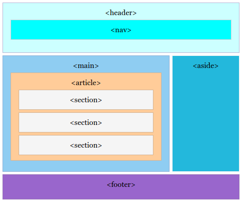
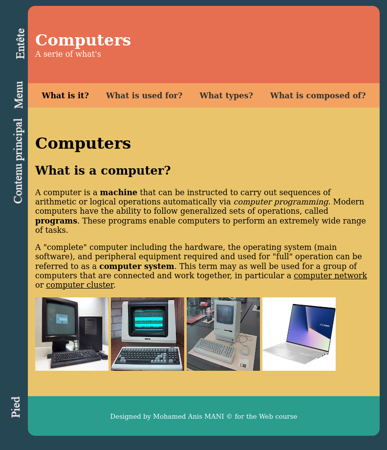

Balises sémantiques
Définition
Une balise sémantique est une balise qui donne une indication sur le contenu qu'elle entoure.
Les balises <div> et <span> ne sont pas des balises sémantiques car
elles ne donnent aucune indication sur leurs contenus.
Il existe deux catégories de balises sémantiques :
- Les balises de structuration de page
- Les balises de structuration du contenu comme
<h1>,<p>,<strong>,<em>, etc.
Structure de page
Le HTML 5 définit plusieurs balises pour structrer une page web. La figure suivante propose une structuration visuelle de la page en utilisant des balises sémantiques.

L'entête
L'entête de la page est définie à l'aide de la balise <header>...</header>.
Le menu de navigation
Une page web présente souvent des liens vers les autres pages ou parties d'un site web. Ces liens sont
définis à l'intérieur de la balise <nav>...</nav>.
Le contenu principal
La balise <main>...</main> inclue le contenu principal d'une page web.
Cette balise peut contenir les balises <article>...</article> et
<section>...</section>. Ainsi, le contenu est découpé en articles
qui peuvent être découpés en sections.
Contenu annexe
Certaines pages proposent un encart de contenu non relié directement au contenu principal de la page à l'aide
de la balise <aside>...</aside>.
Pied de page
Le pied de page est définit à l'aide de la balise <footer>...</footer>.
Application 1
Utiliser les balises sémantiques pour structurer le site web computers disponible en téléchargement à travers ce lien : Computers.
Les pages possèdent la structure suivante :

Utiliser une feuille de style liée. Les couleurs sont laissées au libre choix de l'élève.